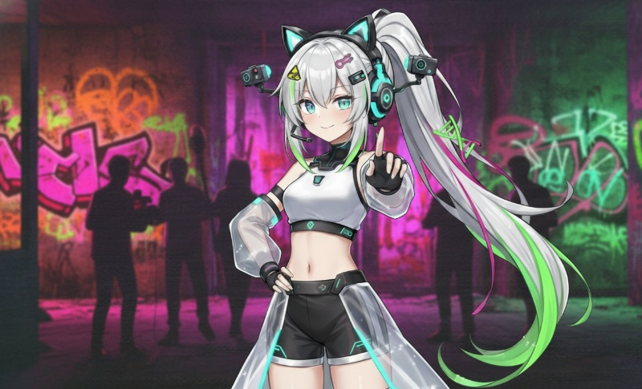

TOOL LOG
そのイラスト、ちゃんと"眠って"いますか。
平面に描かれたキャラクターは、本当は息をひそめているだけ。夜、誰も見ていない画面の中で、
彼女たちはそっと動き出す。
ここにあるのは1枚の絵から"ゴースト"を呼び出し、あなたの端末に憑依させるための儀式——ただのツールです。
ゼロ (Zero)
廃墟探索チーム隊長 / 全オカルト現象の完全否定を掲げる配信者
「まだ『幽霊』なんて信じてるの？頭、大丈夫？」——心霊スポットを次々と踏破し、
"何もないこと"を証明するために配信を続ける彼女。だが彼女自身の記録にだけ、
説明のつかない何かが映り込み続けている。
彼女のチームが遺した記録には、繰り返しこう記されている——
「機材トラブル、後で検証」「XX分XX秒 ノイズあり」。検証は、一度も行われた形跡がない。
このツールは、その"ノイズ"の正体に迫るために作られた——絵の中に取り残された何かを、
こちら側へ引きずり出す装置として。
※本ページはSF『神のいない箱庭で』の作品内プロジェクトとして構成されたフィクションです。
※ツール自体は1枚のキャラクターイラストからパーツを分解生成し、ブラウザ上で動かす一般的な
2Dアニメーションツールで、実際に絵が動き出したり何かが憑依したりすることはありません。